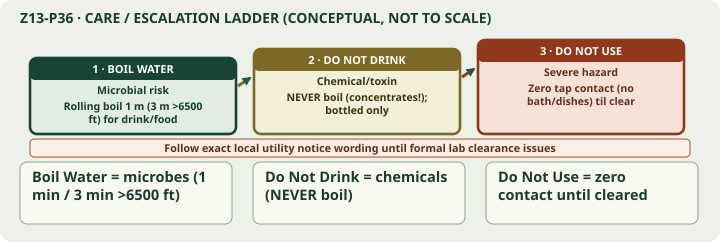

Z13-P36 · Home survival and utilities · New manuscript
Comply accurately with Boil Water, Do Not Drink, and Do Not Use notices
Match household water use strictly to the exact public-water advisory tier so boiling is never misapplied to chemical contamination.
When it applies · Municipal water main breaks, treatment failures, pressure drops, or watershed chemical releases affecting tap water.
Equipment · Local utility alert channel, stored bottled water, clean boiling pot, and timer.

Actions
- Read the EXACT advisory tier issued by your local water utility or health department: Boil Water targets microbial risk (bring clear water to a rolling boil 1 minute; 3 minutes above 6,500 ft for drinking, brushing teeth, food washing, and infant formula).[W07, W02, W29]
- Under a Do Not Drink advisory (chemical/algal/nitrate contamination), do NOT boil tap water—boiling does not remove chemicals and can concentrate or vaporize volatile toxins; use ONLY bottled or officially supplied safe water for ingestion and food prep.[W07, W01, D12]
- Under a Do Not Use advisory (severe chemical/biological/radiological hazard), do NOT use tap water for drinking, cooking, bathing, dishwashing, or laundry until authorities lift the order.[W07, D12]
Failure recognition · Boiling municipal tap water during a chemical-spill Do Not Drink advisory, volatilizing organic solvents into kitchen air.[W07, W01]
Verify · Confirm exact advisory wording from local utility/health authority, shut off automatic ice/water dispensers, and use matched water controls.[W07, D12]
Stop or change course · Never guess when an advisory ends—maintain full precautions until the water utility announces formal laboratory-tested clearance.[W07, D12]
Evidence and editorial notes
- D12 · CDC · Drinking Water Advisories: An Overview (current web edition)
- Section: Water-System Interruptions and Advisory Compliance · Conditions: Municipal main breaks, depressurization, chemical spills, or treatment-plant outages
Support: Follow the exact active utility advisory tier (Boil Water, Do Not Drink, or Do Not Use), shut off automatic icemakers/appliances during advisories, flush household pipes strictly per utility clearance instructions after restoration, and rely on stored or agency-distributed potable water during outages.
Limitations: Boiling water during a chemical-spill Do Not Drink/Do Not Use notice can volatilize or concentrate contaminants. · Conflicting evidence: None; integrates W07 into Z15 infrastructure-disruption scenarios.
Editorial note: Anchors municipal water-outage compliance and safe flushing. · Specialist reviewer: Drinking-water utility and public health
Primary source · checked 2026-11-24 - W01 · CDC · How to Make Water Safe in an Emergency (2024-09-19)
- Section: Water with fuel or toxic chemicals in it · Conditions: Suspected fuel, toxic chemicals or radioactive contamination
Support: Use a different safe supply. Standard boiling and microbial disinfection do not make this water safe.
Limitations: Does not list contaminant-specific lab remediation; applies to emergency consumer decisions only. · Conflicting evidence: None across CDC/EPA emergency guidance.
Editorial note: Used as upstream hard-stop gate prior to any field treatment card. · Specialist reviewer: Drinking-water safety and public health
Primary source · checked 2026-11-24 - W02 · CDC · How to Make Water Safe in an Emergency (2024-09-19)
- Section: Boil > Steps for boiling water · Conditions: Microbiologically suspect water with acceptable chemical source; portable heat and safe vessel
Support: Clarify cloudy water first. Rolling boil for one minute; above 6,500 feet for three minutes. Cool and cover in sanitized containers.
Limitations: Does not remove dissolved metals, nitrates, fuel, or cyanotoxins. · Conflicting evidence: Older Track B B009 omitted the 6,500 ft threshold; CDC threshold governs.
Editorial note: Require explicit timer verification after rolling boil starts. · Specialist reviewer: Drinking-water safety and public health
Primary source · checked 2026-11-24 - W07 · CDC · Drinking Water Advisories: An Overview (current web edition)
- Section: Boil water; Do not drink; Do not use · Conditions: Public-water system advisories
Support: The notice determines safe activities. Use another source for do-not-drink notices. Do not use tap water for any purpose under a do-not-use notice unless authorities direct otherwise.
Limitations: Local utility directives supersede general field summaries. · Conflicting evidence: None; exact advisory category is authoritative.
Editorial note: Distinguishes boil-water, do-not-drink, and do-not-use actions explicitly. · Specialist reviewer: Drinking-water utility and public health
Primary source · checked 2026-11-24 - W29 · CDC · How to Make Water Safe in an Emergency (2024-09-19)
- Section: Boil > Safe Water for Infants, Wounds, and Hygiene · Conditions: Emergency hygiene, wound rinsing, and infant formula preparation under water advisories
Support: Use confirmed potable or properly boiled-and-cooled water for brushing teeth, washing produce, cleaning wounds, and mixing infant formula; avoid untreated water for food-contact utensils.
Limitations: Do-not-use advisories may also prohibit skin contact or bathing depending on contaminant. · Conflicting evidence: None; extends drinking safety to hygiene and preparation boundaries.
Editorial note: Separates potable-required tasks from non-potable utility uses. · Specialist reviewer: Public health and wilderness medicine
Primary source · checked 2026-11-24
Source lineage · CDC Drinking Water Advisories; new manuscript · Classification · New manuscript.